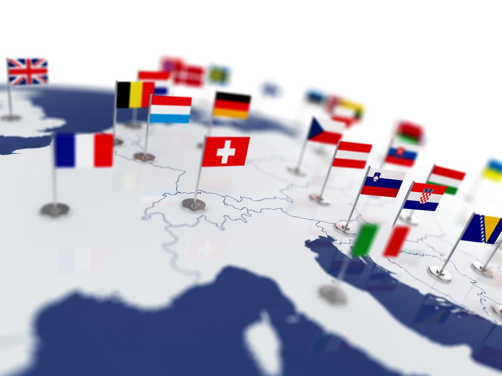
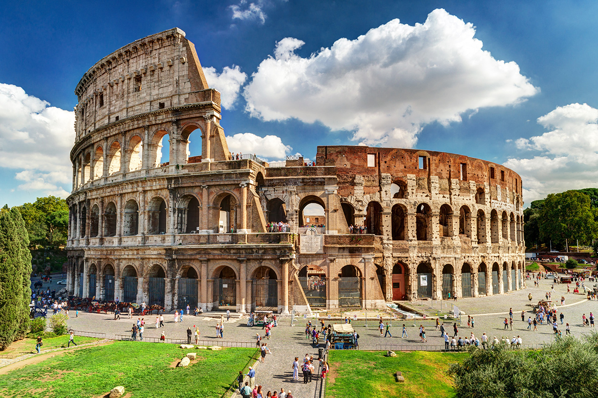
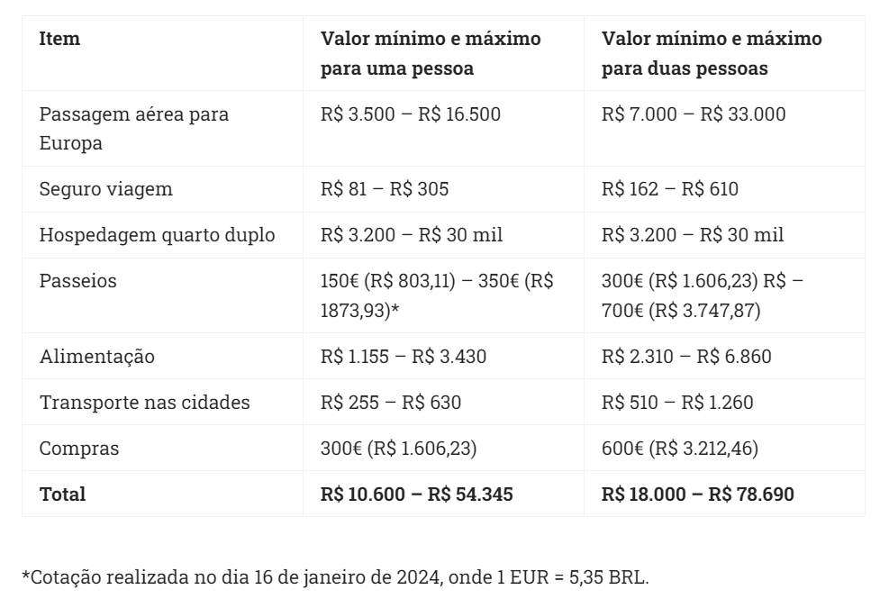

Os 3 principais países para fazer sua viagem
Os países da Europa são visitados por milhares de turistas ao longo de todo o ano. Alguns deles, particularmente, costumam atrair ainda mais visitantes, pelos seus monumentos, paisagens, cultura, história ou gastronomia. Veja abaixo os países mais famosos da Europa:
ITÁLIA

Itália é um país localizado ao Centro-Sul do continente europeu. O país é bastante visitado por turistas que buscam uma boa culinária e belas construções. Sua capital, Roma, é uma das cidades mais visitadas, mas há quem diga que o destino mais romântico é Veneza, localizada a Nordeste do país, num arquipélago da Lagoa de Veneza. Além da arquitetura, suas obras de arte deixam os visitantes maravilhados. O Grande Canal de Veneza, que transporta gôndolas e balsas, é um dos passeios mais procurados, especialmente por casais.
FRANÇA

Localizado na Europa Ocidental, a culinária do país é considerada uma das melhores do mundo. Sua capital, Paris, recebe milhares de visitantes do mundo todo. O principal atrativo da cidade é a famosa Torre Eiffel, uma construção de, aproximadamente, 300 metros de altura que se ilumina no período noturno, compondo uma paisagem de tirar o fôlego.
ESPANHA

A Espanha é um país localizado na Península Ibérica, na região da Europa Meridional. Sua capital é Madrid, um dos principais destinos dos visitantes que vão até o país. Outra cidade bastante visitada é Barcelona, localizada na porção Leste da Espanha. Há muito que se conhecer em Barcelona, como o centro histórico, a Catedral de Barcelona e as diversas praças, como a Praça de Catalunha.
Veja mais informações e dicas sobre os países
Quanto custa viajar para a Europa?
Saber quanto custa viajar para a Europa é um dos primeiros passos do planejamento de uma viagem. Passagens aéreas, hospedagens, transporte interno nas cidades, intercidades e/ou entre os países que visitar, alimentação, passeios turísticos, compras, são os principais gastos de viagem que precisam estar na ponta do lápis.
Segue abaixo o valor total de gastos para sua viagem
